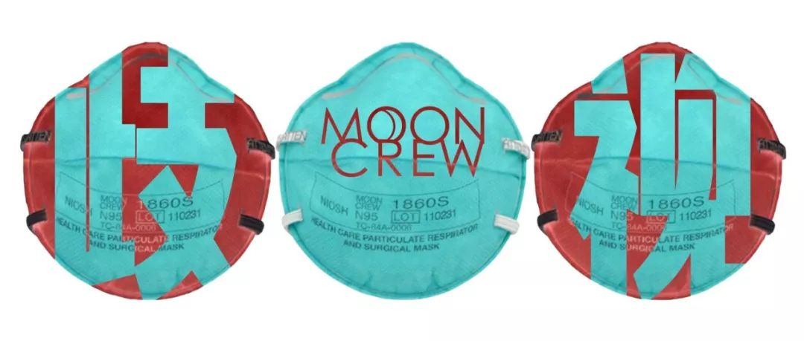

【武汉特稿】围城的第五天，灯火可亲 ｜ 舒飞廉_笔会 _ 文汇网
原文链接 备份链接 【武汉特稿】围城的第五天，灯火可亲 ｜ 舒飞廉 日期:2020年01月29日 08:22:39 作者:舒飞廉 早上起来，阴天，冷，窗外鸟儿鸣叫不停。九点来钟，出门去买菜。昨天市府发布了机动车限行令，没太看明白，还是自觉 …

今天是1月29日，月相为19%的峨眉月。
It is January 29 with a 19 percent of Waxing Crescent.
距离满月还有 11 天。
There are 11 days until Full Moon.
文 || 白清扬
评论文章才不配歌
不仔细看，我以为我回到了上海滩的公园前呢：
“华人与狗不得入内。”
（这句话历史上并非真实存在）
我住在伦敦。疫情状态稳定，无人确诊。中国人自发收割口罩存货。我昨天去药妆店买消毒洗手液，店员告诉我卖空了。我给朋友发消息：“中国人的购买力太恐怖了。”
今天上午去见导师，谈论毕业论文。她是共和国史专家，研究连环画。她胖胖的，是很可爱的英国姐姐。见到我后，她对我微笑：“新春快乐！”然后说：“我对那些正在经历灾难的人感到极为悲伤。希望他们早日好起来！”
我对她说，中国人没问题的。她相信我。
今天伦敦难得出了太阳。阳光打进屋里，似乎闪耀着西方文明自由博爱的光芒。
不过阴云来得也快。我走出办公室，和一个熟悉的香港同学打了招呼，互道新春。他拉住我，说，你看这个视频，挺好玩儿的。
视频里接连播放了分别来自泰国、乌兹别克斯坦和另外一个国家的女孩子打喷嚏的方式。我还没反应过来，视频里出现了一个中国女孩子，她打了个喷嚏，画面瞬间变成地铁站中人群仓皇逃窜的场景。
我像吃了苍蝇一样恶心，匆匆离开了。
（晚上，我在线上向这位香港同学表示我受到了冒犯，他已经向我道歉。）
昨天我看到一个新闻。一个中国男生在意大利踢比赛，对手球员对他说：“祝你早日感染病毒。”当是时，他的教练、队友和裁判都没有任何表示。他哭着离场，随后在社交媒体上发帖痛诉遭遇。
今天又看到法国《皮卡尔邮报》（Le CourrierPicard）用“黄色警报”作标题，借瘟疫之名公然种族歧视的新闻。虽然这条新闻已被其网络端撤下，但它造成的影响是极为恶劣的：大家还记得“黄祸”（Yellow Peril）一词吗？

△ 来源见截图。
这个词最早流行开来正是那个著名的“庚子年”前后：1900年。120年过去了，我们再次迎来庚子年，世界仿佛从未改变。

△ 美国人一脚踢开令人讨厌的“黄祸”。
1880年美国的一个肥皂广告，标题是“中国人必须滚蛋（The Chinese Must Go）”。
那时，“黄祸”一词还没有被大范围使用，但针对东亚人（包括日本人）的歧视（与恐惧）已经开始。
从国内的“恐鄂论”到国际上的“恐华论”，瘟疫造成的影响已经远远超过疾病本身，蔓延到了文化、社会乃至国际关系中。在全球右转的大图景下，在“文明冲突论”大行其道的今天，各个国家（尤其是平民百姓）彼此之间的关系本来就在急速降温；再由瘟疫这种外在力量借力，世界穷尽百年力量所营造的“地球村”假象只会瞬间化为泡沫。
说起来，我在这里呼吁停止歧视一点儿用处都没有。在国际社交网络上气急败坏地发帖，也掀不起波澜。所有人都有理由。“我们不是种族歧视，我们只是不希望法国/丹麦/意大利人……被传染而已。”然后就堂而皇之地把招牌挂了起来：华人与狗不得入内。
多么漂亮。“种族主义”这个概念本来就是西方的产物，也随他们撕下。自始至终，中国人都是“他者”，不配发声，不配说话。
西方将一切话语玩弄于股掌之间，他们中的某个人说了歧视中国人的言论（如前两天的皮尔斯·摩根，英国电视台主持人，因说“ching-chong”在网上被英国人口诛笔伐），西方老爷们开心了就帮我们去声讨一下，说一句“是不是种族歧视只有中国人说了算”；而到了瘟疫的讨论时，他们大肆使用歧视性的语言，却又说：“我们不是种族歧视，我们只是……”
我随你“只是”什么。反正你们也没有真正在乎过我们的想法，不是吗？
更可怕的是东方主义的受害者还在为东方主义辩护。来读读这条：
我其实挺想挂出来这句话是谁说的，但据说微信会以侵犯个人隐私为由删除文章，就算了。（而且我还残存着写作者的良知。）
国家对于病毒的监管、消息是否透明、疫情的处理等等一切，都是值得我们关注的重要问题。国家与政府做错，我们应该批评。但这绝对不是西方名正言顺歧视中国与中国人的理由。
任何理由都不能为种族歧视开脱。
我以为从20世纪下半叶开始，这就是世界上公认的箴言。
是我太天真了。
我知道我写这篇文章，西方人也看不到；我在外网气急败坏的怒吼也不会引起他们的注意。但这个世界已经如此糟糕了，至少需要一点点空间让我吐出心里话。人不能被话憋死。
在文章的结尾，我想做个倡议。
我倡议，我们做不到控制种族歧视，至少不要向内传递歧视。白岩松老师在节目里说，我们知道当春天到来时，武汉的樱花很美。
湖北的朋友们，我们樱花开放的时候再见。

△ 武汉大学樱花。（图片来源：网络）
世界，我们也会期待你更美好的那一天。

责任编辑：沙士淳。
排版：白清扬。
封面图：唐颂。
首图：张天鹤、白清扬。

长按二维码向我转账
受苹果公司新规定影响，微信 iOS 版的赞赏功能被关闭，可通过二维码转账支持公众号。
原文链接 备份链接 【武汉特稿】围城的第五天，灯火可亲 ｜ 舒飞廉 日期:2020年01月29日 08:22:39 作者:舒飞廉 早上起来，阴天，冷，窗外鸟儿鸣叫不停。九点来钟，出门去买菜。昨天市府发布了机动车限行令，没太看明白，还是自觉 …
原文链接 备份链接 非常时期，武汉成了全国人民挂念、祈福的城市。封城后，武汉人民的真实生活是什么样？ 正和岛自1月26日起特别推出《叶青：我在武汉疫区的第N天》专栏。叶青是一位定居武汉40年的市民，也是一名学者和官员。接下来的一段时间，他 …
原文链接 备份链接 关注并星标消费新声 不错过泛消费任何最新动态 尤其在近十年，尽管国际形势时有起落，但两国的经济和民间交流正在不可逆地粘连到一起，相似的传统文化背景让我们之间形成对照，成为几乎不可能被斩断的近邻。 作者 | …
原文链接 备份链接 其中 2009 年甲型 H1N1 流感疫情，在 2009 年 5 月 11 日至 2010 年 8 月 10 日间，中国内地共确诊 128033 例，死亡 805 例，病死率 0.6%。【13】 作为对比，内地除湖北省 …
原文链接 备份链接 非常时期，武汉成了全国人民挂念、祈福的城市。封城后，武汉人民的真实生活是什么样？ 正和岛自1月26日起特别推出《叶青：我在武汉疫区的第N天》专栏。叶青是一位定居武汉40年的市民，也是一名学者和官员。接下来的一段时间，他 …